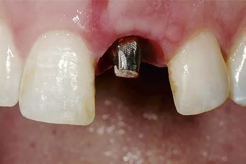
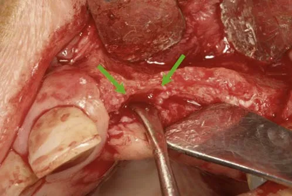

نسخه استخراجشده؛ ترجمه یا تأیید علمی انجام نشده است. وضعیت: captured
ماگزیلای قدامی از دو جهت با مندیبل قدامی فرق دارد و هر دو تفاوت به ضرر توست.
یکم، تراکم استخوان. در بیشتر بیماران استخوان ماگزیلای قدامی از مندیبل قدامی کمتراکمتر است: استخوان نازک و متخلخل در سمت لبیال، کورتیکال بسیار نازک در کف بینی، و کورتیکال متراکمتر فقط در سمت پالاتال. ترابکولار پرهماگزیلا هم ظریفتر است. نتیجهی عملی: کاشت دشوارتر و احتمال بیشتر شکست ناشی از اورلود یا تحلیل کرستال.
دوم، تیغهی باکال. صفحهی نازک استخوان روی ریشهی دندانهای قدامی، هنگام کشیدن دندان اغلب از دست میرود. و از آنجا که ریج پس از کشیدن به سمت پالاتال تحلیل میرود، ماهها بعد با ریجی روبهرو میشوی که هم باریکتر است و هم موقعیتش تغییر کرده.
پس در این ناحیه، دو سؤال جدا بپرس: آیا استخوان کافی هست؟ و آیا استخوان در جای درست هست؟ پاسخ مثبت به اولی، پاسخ مثبت به دومی را تضمین نمیکند.

در ناحیهی زیبایی، موفقیت با اعداد سنجیده میشود و سه عدد از همه مهمترند.
قانون پاپیلا. وقتی فاصلهی نقطهی تماس بیندندانی تا استخوان بینسپتال ۵ میلیمتر یا کمتر باشد، پاپیلا تقریباً همیشه فضای بیندندانی را پر میکند. هرچه این فاصله بیشتر شود، احتمال پر شدن بهسرعت افت میکند — در فاصلهی ۷ میلیمتر، شانس بازگشت پاپیلا پس از رفلکشن جراحی ممکن است کمتر از ۲۵ درصد باشد.
فاصله تا ریشهی مجاور. حداقل ۱٫۵ میلیمتر فضا میان ایمپلنت و ریشهی دندان مجاور لازم است. و پیامدش فراتر از خود ایمپلنت میرود: اگر ایمپلنتی نزدیکتر از این حد کاشته شود و تحلیل استخوان رخ دهد، استخوان و درپ بافت نرم روی دندان مجاور هم از دست میرود — یعنی یک خطای جراحی، دو دندان را درگیر میکند.
عمق اپیکوکرونال. بدنهی ایمپلنت باید حدود ۲ تا ۳ میلیمتر زیر حاشیهی آزاد لثهی سانترال و کانین قرار بگیرد.
و ساختار پنهان این ناحیه: کانال نازوپالاتین. تقریباً در ۴ درصد موارد، این کانال مستقیماً با موقعیت ایدهآل ایمپلنت در پرهماگزیلا تداخل میکند. پس از کشیدن دندان، کانال گشادتر میشود و فورامن نازوپالاتین میتواند بهطور میانگین حدود ۳۶ درصد عرض ریج را اشغال کند.

نوع سؤال: ساخت کلمه · 4 خانه
حروف منبع: ش · ه · ر · ی